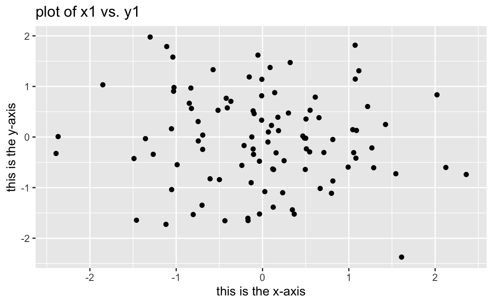

Chapter 2 Statistical Learning
2.1 What is Statistical Learning?
Methods to estimate functions that connect inputs to outputs.
If there exists a quantitative response variable \(Y\) and \(p\) different predictors (\(X_1\), \(X_2\), …, \(X_p\)), we can write this relationship as:
2.1.1 Why Estimate \(f\)?
2.1.1.1 Prediction
We can predict Y using:
Accuracy of \(Y\) is dependant on:
- reducible error
- \(\hat{f}\) will never be perfect estimate of \(f\), and model can always be potentially improved
- Even if \(\hat{f} = f\), prediction would still have some error
- irreducible error
- Because \(Y\) is also a function of random \(ε\), there will alwayas be variability
- We cannot reduce the error introduced by \(ε\)
2.1.1.2 Inference
How does \(Y\) respond to changes in \(X_1, X_2, ..., X_p\)?
2.1.2 How do we estimate \(f\)?
- Use training data to train method
- \(x_ij\) is value of \(j\)th predictor for observation \(i\), \(y_i\) is value of response variable
- \(i = 1, 2, ..., n\), \(j = 1, 2, ..., p\)
- Using training data, apply statistical learning method estimate unknown function \(f\)
- Most statistical learning methods can be characterized as either parametric or non-parametric
2.1.2.1 Parametric Methods
Two-step model-based approach:
- Make an assumption about functional form of \(f\), such as “\(f\) is linear in \(X\)”
- Perform procedure that uses training data to train the model
- In case of linear model, this procedure estimates parameters \(β_0, β_1, ..., β_p\)
- Most common approach to fit linear model is (ordinary) least squares
This is parametric, as it reduces the problem of estimating \(f\) down to one of estimating a set of parameters. Problems that can arise:
- Model will not match the true unknown form of \(f\)
- If model is made more flexible, which generally requires estimating a greater number of parameters, overfitting can occur
2.1.2.2 Non-parametric Methods
Non-parametric methods do not make assumptions about the form of \(f\). An advantage of this is that they have the potential to fit a wider range of possible shapes for \(f\). A disadvantage is that, because there are no assumptions about the form of \(f\), the problem of estimating \(f\) is not reduced to a set number of parameters. This means more observations are needed compared to a parametric approach to estimate \(f\) accurately.
2.1.3 The Trade-Off Between Prediction Accuracy and Model Interpretability
Restrictive models are much more intepretable than flexible ones. Flexible approaches can be so complicated that it is hard to understand how predictors affect the response.
If inference is the goal, simple and inflexible methods are easier to interpret. For prediction, accuracy is the biggest concern. However, flexible models are more prone to overfitting.
2.1.4 Supervised Versus Unsupervised Learning
Most machine learning methods can be split into supervised or unsupervised categories. Most of this textbook involves supervised learning methods, in which a model that captures the relationship between predictors and response measurements is fitted. The goal is to accurately predict the response variables for future observations, or to understand the relationship between the predictors and response.
Unsupervised learning takes place when we have a set of observations and a vector of measurements \(x_i\), but no response \(y_i\). We can examine the relationship between the variables or between the observations. A popular method of unsupervised learning is cluster analysis, in which observations are grouped into distinct groups based on their vector of measurements \(x_i\). An example of this would be a company segmenting survey respondents based on demographic data, in which the goal is to ascertain some idea about potential spending habits without possessing this data.
Clustering has some drawbacks. It works best when the groups are significantly distinct from each other. In reality, it is rare for data to exhibit this characteristic. There is often overlap between observations in different groups, and clustering will inevitably place a number of observations in the wrong groups. Further more, visualization of clusters breaks down as the dimensionality of data increases. Most data contains at least several, if not dozens, of variables.
It is not always clear-cut whether a problem should be handled with supervised or unsupervised learning. There are some scenarios where only a subset of the observations have response measurements. This is a semi-supervised learning problem, in which a statistical learning method that can utilize all observations is needed.
2.1.5 Regression Versus Classification Problems
Variables can be categorized as either quantitative or qualitative. Both qualitative and quantatitive predictors can be used to predict both types of response variables. The more important part of choosing an appropriate statistical learning method is the type of the response variable.
2.2 Assessing Model Accuracy
Every data set is different and there is no one statistical learning method that works best for all data sets. It is important for any given data set to find the statistical learning method that produces the best results. This section presents some concepts that are part of that decision-making process.
2.2.1 Measuring the Quality of Fit
We need to be able to quantify how well a model’s predictions match the observed data. How close are the model’s predicted response values to the true response values?
In regression, mean squared error (MSE) is the most commonly-used measure. A small MSE indicates the predicted responses are very close to the true ones. MSE used on training data is more accurately referred to as the training MSE.
We are most concerned with the accuracy of the predictions when we apply our methods to previously unseen data. If you are trying to predict the value of a stock, your concern is how it performs in the future, not on known data from the past. Thus, the goal is then minimizing the test MSE, which measures the accuracy of a model on observations that were not used to train the model. Imagine a set of observations \((x_0, y_0)\) that were not used to train the statistical learning method.
The goal is to select the model that minimizes the test MSE shown above. How can we do this?
Sometimes, there is an available test data set full of observations that were not used in training the model. The test MSE can be evaluated on these observations, and the learning method which produces the smallest TSE will be chosen. If no test observations are available, picking the method that minimizes the training MSE might seem to be a good idea. However, there is no guarantee that a model with the lowest training MSE also has the lowest test MSE. Models often work in minimizing the training MSE, and can end up with large test MSE.
There is a tradeoff in model flexibility, training MSE, and test MSE. A model that is too flexible can closely match the training data, but perform poorly on the test data. There is a sweet spot to find between model flexibility, training MSE, and test MSE that varies for each unique data set.
Degrees of freedom is a quantity that summarizes the flexibility of a curve, discused more fully in Chapter 7. The more inflexible a model is, the fewer degrees of freedom.
As model flexibility increases, training MSE will inevitably decrease, but test MSE may plateau or even rise. A model with a small training MSE and large test MSE is overfitting the data, picking up patterns on the training data that don’t exist in the test data. Since we expect the training MSE to almost always be lower than the test MSE, overfitting is a specific case when there exists a less flexible model with a smaller test MSE.
2.2.2 The Bias-Variance Trade-Off
The expected test MSE can be broken down into the sum of three quantities:
- the variance of \(\hat{f}(x_0)\)
- the squared bias of \(\hat{f}(x_0)\)
- the variance of the error terms ε
The formula above defines the expected test MSE, which can be thought of the average test MSE that would be obtained if we repeatedly estimated \(f\) and tested each at \(x_0\). To minimize expected test MSE, we need to choose a statistical learning method that achieves both low variance and low bias. Since variance and squared bias are nonnegative, the expected test MSE can never be lower than \(Var(ε)\), the irreducible error.
Variance refers to how much \(\hat{f}\) would change if repeatedly estimated with different training data sets. Methods with high variance can produce large changes in \(\hat{f}\) through small changes in the training data. Generally, the more flexible a model it is, the higher the variance. Following the observations so closely can cause changes in just a single observation of the training data to result in significant changes to \(\hat{f}\). More inflexible models, such as linear regression, are less susceptible to the effects of changing a single observation.
Bias is the error introduced from approximating a complicated problem by a much simpler model. Fitting a linear regression to data that is not linear will always lead to high bias, no matter how many observations are in the training set. More flexible models tend to result in less bias.
More flexible methods lead to higher variance and lower bias. The rate of change between the quantities determines at which point the test MSE is minimized. Bias tends to decrease at a faster rate in the beginning, causing the test MSE to decline. However, when flexibility reaches a certain point, variance will begin to increase faster than bias is decreasing, causing test MSE to rise.
This relationship between bias, variance, and test MSE is known as the bias-variance tradeoff. Here is a good article on it: Understanding the Bias-Variance Tradeoff
In real-life scenarios where \(f\) is unknown, we cannot explicitly compute the test MSE, bias, or variance. However, there are methods to estimate this, such as cross-validation, which will be discussed in Chapter 5.
2.2.3 The Classification Setting
For classification problems where \(y_i,...,y_n\) are qualitative, we can quantify the accuracy of our estimate by using the training error rate, the proportion of mistakes that are made when applying our model \(\hat{f}\) to the training observations.
\(1/n\sum_{i=1}^nI(y_i \neq \hat{y_i})\)
training error rate
Breaking the formula above down.
- \(\hat{y}_i\) is the predicted class label for the \(i\)th observation using \(\hat{f}\)
- \(I(y_i \neq \hat{y_i})\) is an indicator variable that equals 1 if \(y_i \neq \hat{y_i}\), and 0 if \(y_i = \hat{y_i}\)
- If \(I(y_i \neq \hat{y_i})\) = 0, then the \(i\)th observation was classified correctly
Similar to our regression problems, we are more interested in the model’s performance on test observations not used in training. The formula below gives us the test error rate for a set of observations of the form \((x_0, y_0)\).
\(Ave(I(y_0 \neq \hat{y_0}))\)
test error rate
A good classifier will minimize the above.
2.2.3.1 The Bayes Classifier
The test error rate is minimized by the classifier that assigns each observation to the most likely class, given its predictor values. Our decision is then based on finding the value at which the formula below is largest.
\(Pr(Y = j|X = x_0)\)
If the response values are binomial (let’s call them A and B) the classifier simplifies to:
\(Pr(Y = A|X = x_0) > 0.5\:then\:A,\:else\:B\)
The Bayes decision boundary is the point where the probabilities are equal for both groups. Points on either side of this line are assigned to the group predicted by the classifier. The Bayes error rate averaged over all possible values of \(X\) is below.
\(1-E(max_jPr(Y = j|X))\)
Bayes error rate
The Bayes error rate is often greater than zero, as observations between classes overlap in real-world data.
2.2.3.2 K-Nearest Neighbors
Since the true conditional distribution of \(Y\) given \(X\) cannot be known in real data, the Bayes classifier is used as a “gold standard” to compare other models to. Many methods attempt to estimate this conditional distribution, and then classify an observation based on the estimated probability. A common method is K-nearest neighbors (KNN). Given a positive integer \(K\) and a test observation \(x_0\), KNN then does the following:
- identifies the \(K\) points in the training data that are closest to \(x_0\), represented by \(N_0\)
- estimates conditional probability for class \(j\) as the fraction of the points in \(N_0\) whose response values equal \(j\):
\(Pr(Y = j| X = x_0) = 1/K\sum_{i\in N_0}I(y_i = j)\)
- applies Bayes rule and classifies test observation \(x_0\) to class with largest probability
KNN can be surprisingly robust to the optimal Bayes classifier. The choice in \(K\) makes a huge difference. For example, a \(K\) = 1 is highly flexible, classifying observations based off of the closest nearby training observation. \(K\) = 100 would do the opposite, basing its classification off a large pool of training observations compared to the \(K\) = 1 version. The higher \(K\) value produces a more linear model. The trade-off between flexibility, training error rate, and test error rate applies to both classification and regression problems.
2.3 Lab: Introduction to R
Finally we get to some R code. This chapter of ISLR introduces basic R syntax, and most of it is unchanged in my version. This should all be familiar to anyone who has used R before.
We are going to be working with tibbles as our primary data structure throughout this book. Please read here: tibbles
2.3.0.1 Basic Commands
Skipping this.
2.3.0.2 Graphics (Plotting)
Here we begin to explore the “tidy” approach to R. We will abstain from base R plotting and use ggplot2, which is a more powerful tool. Let’s plot a scatterplot with some basic labels.
tbl_rnorm <- tibble(
x1 = rnorm(100),
y1 = rnorm(100)
)
ggplot(tbl_rnorm, aes(x = x1, y = y1)) +
geom_point() +
labs(title = "plot of x1 vs. y1",
x = "this is the x-axis",
y = "this is the y-axis")
Here is the plot.